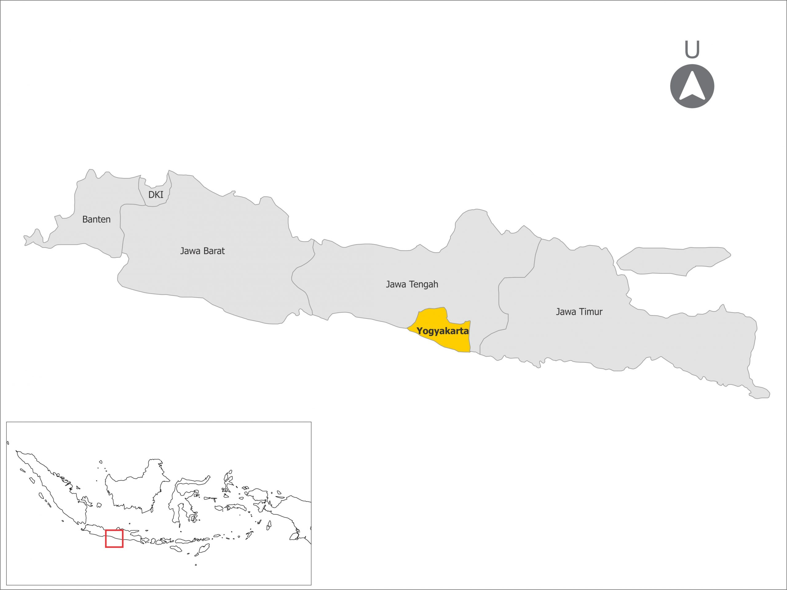

Geografis

Koordinat: 7°47' Lintang Selatan dan 110°22' Bujur Timur.
Yogyakarta berbatasan dengan:
- Utara: Provinsi Jawa Tengah.
- Selatan: Samudra Hindia.
- Timur: Kabupaten Klaten (Jawa Tengah).
- Barat: Kabupaten Purworejo (Jawa Tengah).
Iklim
Yogyakarta memiliki iklim tropis, dengan dua musim utama: musim hujan (Oktober hingga April) dan musim kemarau (Mei hingga September). Suhu rata-rata berkisar antara 22°C hingga 32°C.